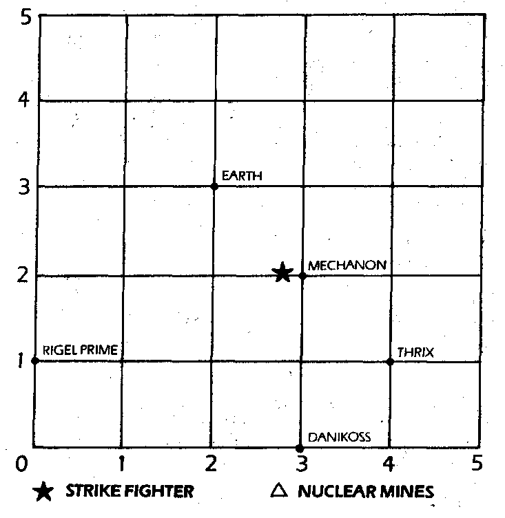

286
Nothing happens. CAIN tells you that the grid exists in only two dimensions, you have tried to move in a third dimension. The radiation level is critical. Which coordinates will you try next?
| 1/ 0/ 0 | Turn to 332 |
| 0/ 5/ 5 | Turn to 321 |
| 0/-5/-5 | Turn to 279 |